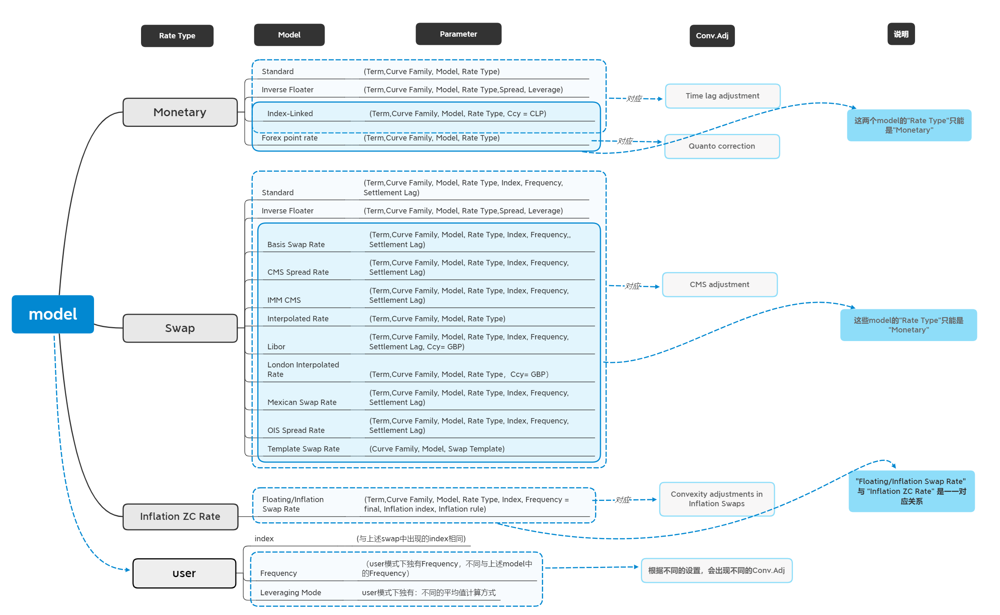

Advanced可选设置项 (Advanced Frame)
用户可在Advanced选项卡中设置的参数包括：
| 名称 | 选项 | 参数说明 |
|---|---|---|
| Model | Standard;Basis Swap Rate;CMS Spread Rate;Floating/Inflation Swap Rate ;Forex point rate ;IMM CMS;Index-Linked;Interpolated Rate;Inverse Floater ;Libor ;London Interpolated Rate ;Mexican Swap Rate;OIS Spread Rate;Template Swap Rate | 见后文：利率模型选择 |
| Rate Type | Monetary;Swap;User;Inflation YoY Swap;Inflation ZC Rate | 选择Monetary时：Term的单位自动设置为Day；选择Swap时：Term的单位自动设置为Year；选择Inflation YoY Swap时：frequency自动设置为Annual；选择Inflation ZC Rate时：frequency自动设置为Final； |
| Conv.Adj | Time Adjustment | 见后文：凸性调整 |
| Leverage | 用户输入，单位为% | 只有当Model选择为Inverse Floater时出现 |
| Leveraging Mode | No average;Gross Av.;Cryst. Av.;Capit. Av.;Capit. Mth.;Capit. Except Margin;CDI + Margin;CDI% Margin | 只有当Rate Type选择为User时出现 |
| Index | 可选择已有的Interest Rates | 只有当Rate Type选择为User或Swap时出现 |
| Fixing Place | 选择地区或市场 | 选择用于确定利率固定下来的工作日的地区日历，利率固定日期由Rate Definition中的Settlement Lag决定 |
| Calendar Place | 选择地区或市场 | 选择用于确定利率的工作日的地区日历，Rate Begin Date和Rate End Date使用这个日历加上Settlement Lag决定 |
| Frequency | Daily;Weekly;Monthly;Annual;Final | 只有当Rate Type选择为User且Leveraging Mode选择为Gross Av.或Cryst. Av.时出现 |
"Advanced" 中各模块联系紧密，各模块关系图如下图所示：
